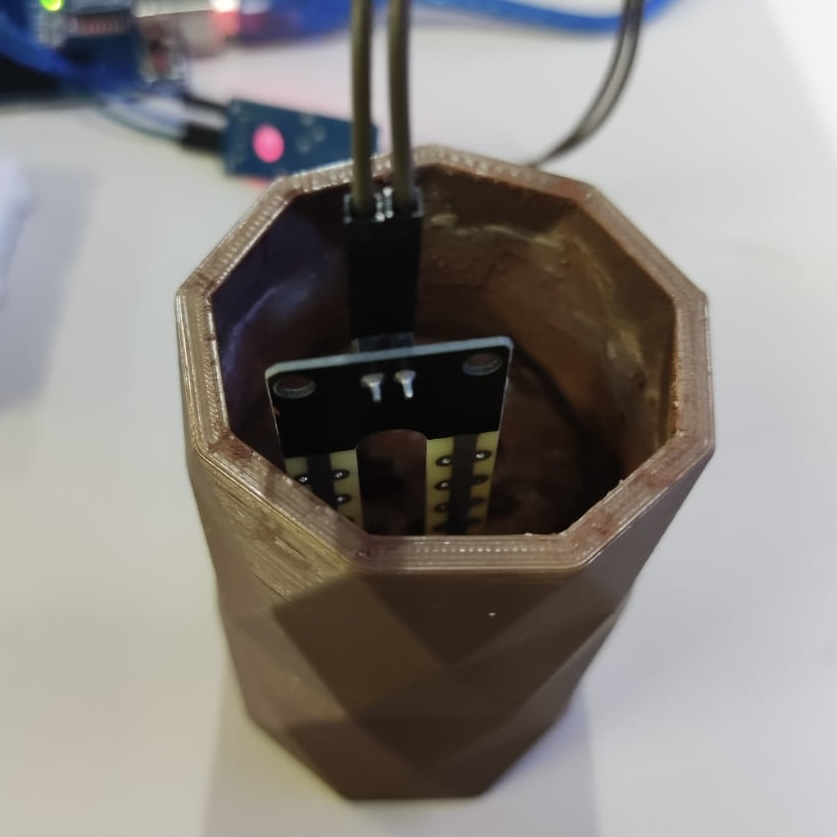
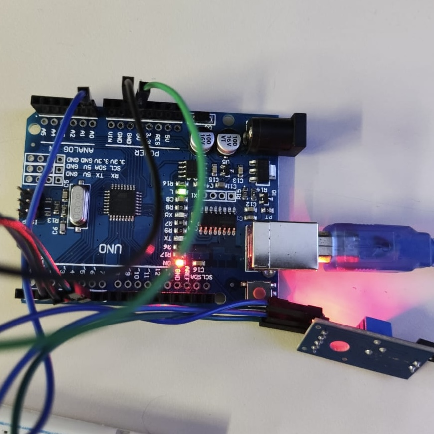

Neste tutorial, vamos criar um protótipo que detecta a umidade do solo e indica se a planta precisa de água. Tudo isso será feito com montagem simples na protoboard e programação por blocos, utilizando o PictoBlox.
Materiais Necessários:
Conceitos Envolvidos:
Etapas de Montagem
Nesta etapa, as participantes aprendem a criar um modelo digital de suporte para a plantinha inteligente, com o objetivo de imprimir essa peça em 3D. O suporte segue medidas padrão de 3 cm de largura por 5 cm de altura, sendo planejado para acomodar os componentes eletrônicos utilizados na montagem.
Ferramentas Utilizadas:
Para realizar essa parte do projeto, utilizamos a plataforma Tinkercad, que permite modelar objetos 3D de forma simples e intuitiva, direto do navegador. Também são necessários um computador com acesso à internet, uma impressora 3D e o filamento PLA
Etapas da Modelagem
Acesso ao Tinkercad:
Inserção das medidas:
Personalização estética:
Exportação para impressão:
Impressão:
Após exportar, o arquivo é aberto em um software de fatiamento (como o Ultimaker Cura), onde são configurados o tipo de filamento, a temperatura de impressão, os suportes e o nível de preenchimento. Por fim, a impressão é iniciada e, após finalizada, o suporte estará pronto para ser utilizado no projeto.
Na etapa final do Projeto Plantinha, os participantes aprendem a criar um site simples com HTML e CSS para documentar e compartilhar todas as etapas da oficina. O objetivo é tornar o conhecimento acessível a outras pessoas que queiram replicar o projeto, além de incentivar o contato com o desenvolvimento web. Além da criação do site, essa fase também é dedicada à introdução ao Git e ao uso do GitHub como ferramenta de versionamento.
Ferramentas Utilizadas
Antes de começarem a programar, as alunas são apresentadas a dois conceitos essenciais do desenvolvimento de software:
As alunas aprendem a importância de versionar seus projetos, colaborar em equipe e manter um histórico de mudanças, além de entender como o GitHub pode ser uma vitrine de seus conhecimentos e experiências.
Subindo o Projeto com GitHub Desktop:
Desenvolvimento com HTML e CSS
HTML (HyperText Markup Language) é a linguagem responsável por estruturar o conteúdo da página. Com o HTML, conseguimos criar títulos, parágrafos, listas, links, imagens e muito mais. Ele é como a "estrutura" da casa.
CSS (Cascading Style Sheets) é a linguagem que define o visual do site. Com o CSS, conseguimos mudar cores, fontes, tamanhos, alinhamento, adicionar sombras, espaçamento e muito mais. Ele é como a "decoração" da casa.
O index.html contém o conteúdo do site. Ele é dividido em seções como:
Objetivo do Projeto
O no arquivo style.css as alunas definem como o site vai parecer no navegador:com as regras de estilo que definem como o conteúdo do index.html será exibido.
Colocando o site no ar
Para colocar um site no ar pelo GitHub, o processo é bem simples e pode ser feito em poucos passos. Primeiro, é necessário criar um repositório no GitHub e adicionar nele os arquivos do seu site (HTML, CSS, JavaScript, imagens, etc.). Em seguida, basta acessar as configurações do repositório e localizar a seção Pages. Lá, você escolhe a branch que deseja publicar (geralmente a main ou master) e a pasta onde estão os arquivos, normalmente a raiz (/). Depois de salvar as configurações, o GitHub irá gerar automaticamente um link do seu site, que ficará disponível para acesso público. Assim, em poucos minutos, seu projeto já pode ser compartilhado com qualquer pessoa pela internet.
O RENACEE MD (Rede Nacional de Educação e Extensão Meninas Digitais) é uma iniciativa que visa fortalecer e conectar projetos locais voltados para a inclusão e permanência de meninas e mulheres na área da Computação e Tecnologias da Informação. Acreditamos que, por meio de ações educativas, colaborativas e inspiradoras, é possível transformar realidades e construir um futuro mais diverso e justo na tecnologia.
Alinhado a essa rede, o Meninas Digitais no Cerrado é um projeto parceiro, criado em 2016 no IF Goiano – Campus Ceres. Ele surgiu com o desejo de tornar o campus uma instituição colaboradora da Sociedade Brasileira de Computação (SBC), no âmbito do programa nacional Meninas Digitais, existente desde 2011. Seu principal objetivo é divulgar a área da Computação e despertar o interesse de estudantes de cursos técnicos e superiores da área de Tecnologia da Informação (TI) da cidade de Ceres e região do Vale do São Patrício, além de demais campi do IF Goiano incentivando-as a seguir carreira na área.
Por meio de oficinas, palestras, eventos e projetos de extensão, buscamos criar espaços seguros, acolhedores e motivadores para que meninas possam se ver e se desenvolver como futuras profissionais da tecnologia.
Se você leu até aqui, o nosso muito obrigada! Conheça nossa equipe ;)
Alanna Leticia Pessoa de Carvalho
alanna.leticia@estudante.ifgoiano.edu.br
Ana Carolina Xavier de Oliveira
ana.xavier@estudante.ifgoiano.edu.br
Janiele de Farias Machado
janiele.farias@estudante.ifgoiano.edu.br
Maria Eduarda da Silva Carrijo
maria.carrijo@estudante.ifgoiano.edu.br
Maria Luiza do Carmo Araújo Favorito
maria.favorito@estudante.ifgoiano.edu.br
Manoela Amaral Duarte
manoela.amaral@estudante.ifgoiano.edu.br
Sarah Gabriela Rodrigues Almeida
sarah.gabriela@estudante.ifgoiano.edu.br
Ramayane Bonacin Braga
ramayane.santos@ifgoiano.edu.br
Thalia Santos de Santana
thalia.santana@ifgoiano.edu.br